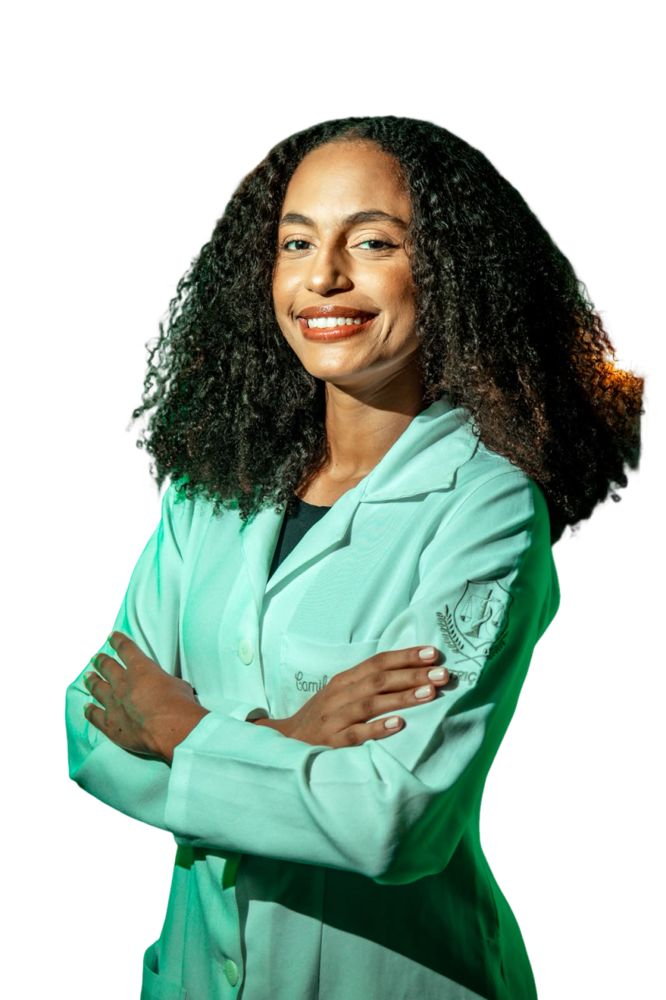
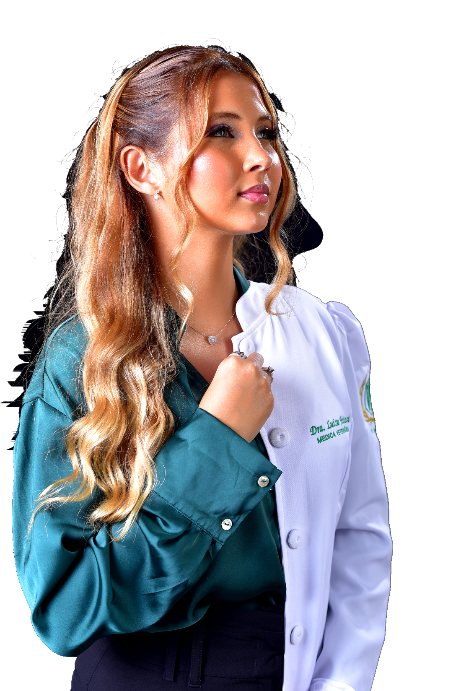
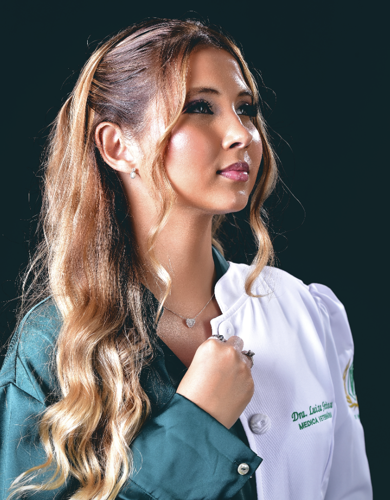

{{ s.num }}
{{ s.title }}
{{ p }}



Consultoria técnica para ajudar você a adequar processos, reduzir riscos e manter sua operação em conformidade com mais clareza e segurança.
Diagnóstico técnico inicial gratuito
Solicite seu diagnóstico inicial
Administrar um estabelecimento de alimentos exige atenção a fornecedores, equipe, produção, estoque, clientes e inúmeras decisões diárias. Em meio a essa rotina, manter processos organizados e acompanhar todas as exigências sanitárias pode se tornar um desafio.
A NAVS começa entendendo como o seu negócio funciona. Avaliamos necessidades, identificamos pontos de atenção e ajudamos a definir prioridades para que as adequações sejam realizadas de maneira planejada e possível.
Você recebe orientação técnica com linguagem clara, entendendo o que precisa ser ajustado, por que aquilo é importante e como implementar as melhorias na rotina.
{{ p }}
A NAVS Consultoria Técnica nasceu da atuação conjunta de Luiza Feitosa e Camila Oliveira, reunindo conhecimentos da Medicina Veterinária e da Nutrição para apoiar empresas do setor de alimentos.
Essa atuação multidisciplinar permite analisar diferentes pontos da operação, sempre respeitando as atribuições de cada profissão.
Nosso objetivo não é entregar uma lista de problemas. Buscamos compreender a estrutura, a rotina e as possibilidades de cada estabelecimento para propor melhorias que possam, de fato, fazer parte da operação.
Luiza atua há um ano na ADAB, experiência que aproxima a consultoria da realidade das exigências sanitárias.
Atendimento próximo. Linguagem clara. Soluções personalizadas.

Adequação sanitária não precisa significar apenas mais documentos, custos ou burocracia.
Quando os processos são bem estruturados, a empresa ganha clareza sobre responsabilidades, melhora a organização da equipe, reduz falhas operacionais e cria uma rotina mais consistente.
Por isso, a NAVS trabalha com prioridades.
Antes de recomendar mudanças, buscamos compreender o que realmente precisa ser feito e quais soluções são compatíveis com a estrutura e o momento do estabelecimento.
A NAVS Consultoria Técnica atende estabelecimentos de alimentos em Salvador, Bahia, e Região Metropolitana, com serviços presenciais e possibilidade de orientações e demandas documentais realizadas de forma remota, conforme a necessidade do projeto.
Fale conosco e explique sua necessidade


Fale conosco.
Explique o momento atual do seu negócio e conheça as soluções que podem ajudar a tornar seus processos mais seguros, organizados e adequados.
Solicitar diagnóstico técnico inicial{{ f.a }}